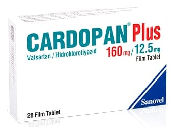

Cardopan Plus 160 mg /12.5 mg Film Kaplı Tablet, 28 Tablet

Ne için kullanılır
KT · Bölüm 1CARDOPAN PLUS, 28 ve 98 adet film kaplı tablet içeren blister ambalajda takdim edilmektedir. Tabletler oblong, çentiksiz, pembe renklidir. Her bir film kaplı tablet, 160 mg valsartan ve 12,5 mg hidroklorotiyazid içerir. CARDOPAN PLUS, yüksek kan basıncının kontrol edilmesine yardımcı olan anjiyotensin II reseptör blokörü ve idrar söktürücü (diüretik) içerir. Vücutta bulunan doğal bir madde olan anjiyotensin II kan damarlarının daralmasına ve böylece kan basıncının yükselmesine neden olur. CARDOPAN PLUS içindeki valsartan anjiyotensin II’nin etkisini önler. Sonuç olarak, kan damarları genişler ve kan basıncı düşürülür. Diüretikler, idrar atılımını artırarak vücuttaki tuz ve su miktarını düşürür. Bu, uzun süreli kullanımda kan basıncını düşürmeye ve kontrol altına almaya yardımcı olur.
CARDOPAN PLUS yüksek kan basıncının düşürülmesinde kullanılır. Yüksek kan basıncı kalbin ve atardamarların iş yükünün artırır. Bu durum uzun süre devam ederse, beyin, kalp ve böbrek damarlarını hasara uğratabilir ve inme, kalp yetmezliği ya da böbrek yetmezliği
ile sonuçlanabilir. Yüksek kan basıncı kalp krizi riskinin artırır. Kan basıncınızı normal değerlere düşürmek bu hastalıkların gelişme riskini azaltır.
CARDOPAN PLUS’ın nasıl çalıştığı veya bu ilacın size neden reçete edildiği ile ilgili sorularınız var ise, doktorunuza sorunuz.